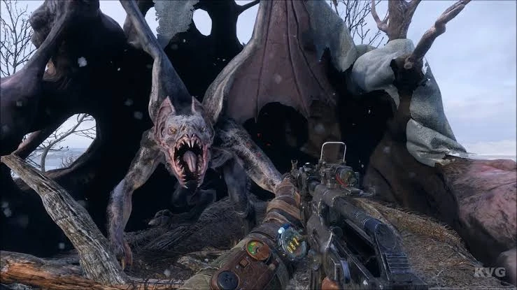

Ambos vieron que deberían de llamar la atención del demonio para poder acabar con él, por lo que dimitri decidió lanzar una granada hacía una esquina del edificio para llamar la atención del demonio, mientras que Aleksei se preparaba para atacar al demonio con el cuchillo de caza y el arma de fuego. El demonio se acerca rápidamente hacía la esquina del edificio, y luego de unos segundos, Aleksei se lanza hacía el demonio para atacarlo, aunque el demonio es demasiado rápido y logra esquivar el ataque de Aleksei, este decide usar el arma de fuego para atacar al demonio, aunque el arma de fuego no es completamente funcional, logra disparar un par de balas, las cuales logran herir al demonio. No obstante, Aleksei logra darle en un ojo al demonio, lo que hace que este caiga del edificio. Este se encuentra herido, por lo que dimitri y Aleksei deciden acabar con él de una vez por todas, por lo que deciden lanzarle varias granadas para acabar con él, aunque el demonio logra esquivar la mayoría de las granadas, una logra herir de gravedad al demonio. Dejandolo fuera de combate. Dimitri aprovecha para cortar un pedazo de sus alas, como un recuerdo y para conmemorar a sus compañeros caidos. Sin embargo, se escucha un ruido, era la señal de que Aleksei se estaba quedando sin tiempo, por lo que deciden salir corriendo hacia el metro para salvar su vida. Justo antes de llegar al metro, Aleksei comienza a estornudar y a sentir que el gas tóxico de la superficie está afectando su cuerpo, Dimitri lo nota, así que decide darle su último filtro a él. Este le dice "toma mi último filtro chico, creo que mi batalla por fin ha terminado". Ambos llegan al metro, Dimitri se siente algo enfermo, pero el dice que puede soportarlo. Luego Dimitri dice que ayudará a Aleksei a encontrar a sus amigos que desaparecieron.
